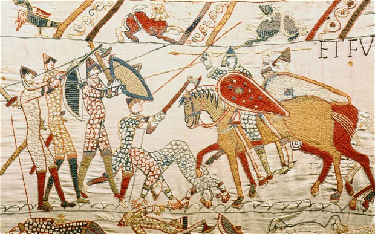

Bayeux Saga is a hybrid strategy/adventure game in the tradition of King of Dragon Pass. In this game you are given the task of managing a feudal estate in a fantasy world, defending your holdings from fould monsters and jealous rivals, and increasing your power and fame through feats of conquest or valor. Will you rule your realm with an iron fist and a hunger for power and glory? Or will you free the people from tyranny and shield them from the machinations of the dark forces that pervade this world?
Bayeux Saga is named for its artstyle, done in the fashion of the medieval artifact known as the Bayeux Tapestry, which depicts the conquest of England by William, Duke of Normandy.
Start the Game!